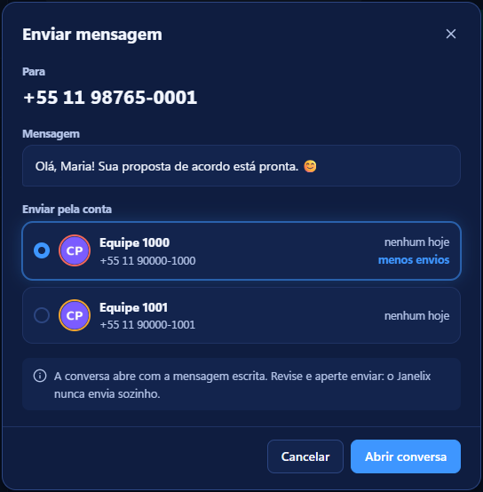
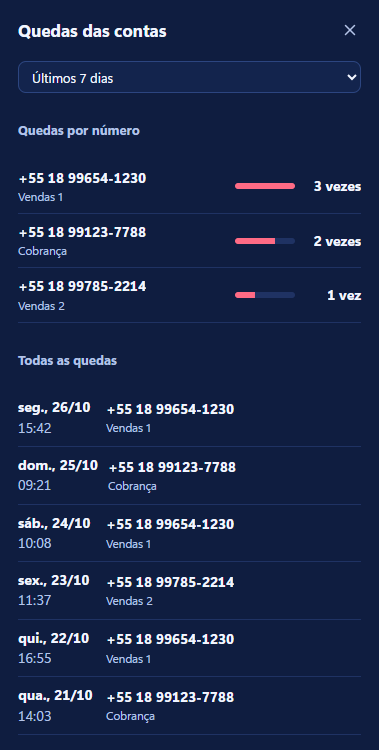
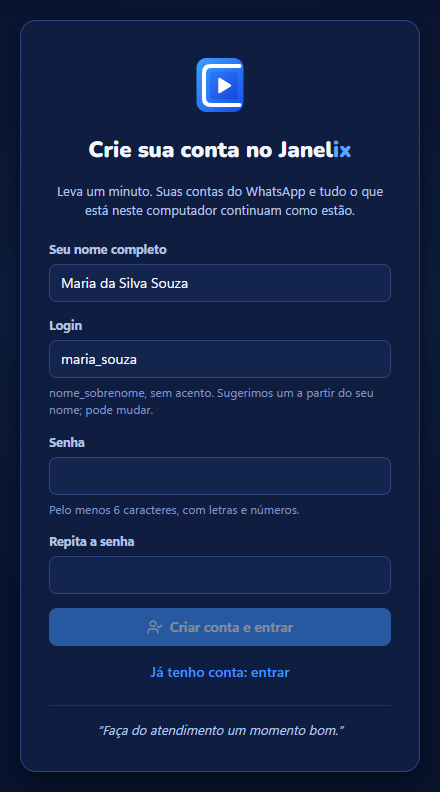

Todas as contas do atendimento numa janela só.
Várias contas de WhatsApp abertas juntas, sem trocar de aba. Veja abaixo, em poucos segundos, o que cada parte faz.
- Áudio vira texto no seu computador
- Nunca envia mensagem sozinho
- Atualiza sozinho

Veja o Janelix por dentro.
Prints do aplicativo de verdade, com dados de teste. Ao lado de cada um, o que ele faz.
-

Várias contas lado a lado
Cada número do WhatsApp fica numa conta separada, todas na mesma janela. A barra da esquerda mostra as contas; um clique troca de uma para outra.
- O número de cada conta aparece no nome, e dá para dar um apelido.
- Um número no ícone mostra quantas mensagens novas chegaram em cada conta.
- No teclado: Ctrl+1, Ctrl+2… vai direto para cada conta.
-

Áudio vira texto
O áudio que o cliente manda aparece escrito dentro do próprio balão, aos poucos, enquanto você atende.
- Feito no seu computador, sem internet: o áudio não vai para lugar nenhum.
- Prefere escolher? Desligue o automático e use o botão “Transcrever áudio”.
-

Ligações guardadas
Todas as gravações ficam no painel Ligações, com data, contato e conta.
- Ouça de novo quando precisar.
- Peça o texto da ligação: ele separa o que você falou do que o cliente falou.
- Mande a gravação numa conversa, como um áudio.
-

Lembrete na hora certa
O botão ao lado do microfone agenda uma mensagem: escreva o texto e escolha o dia e a hora.
- Cinco minutos antes e na hora, o Janelix avisa, mesmo minimizado.
- Na hora, abre a conversa certa com o texto pronto. Quem envia é você.
-

Abrir conversa pelo seu sistema
Um link no seu sistema, planilha ou site abre o Janelix já com o número e a mensagem. Você escolhe por qual conta mandar.
- Mostra quantas mensagens cada conta mandou hoje pelo link. A que mandou menos já vem marcada.
- A conversa abre com a mensagem escrita. Quem aperta enviar é você.
- Só conta como enviada quando você envia de verdade. Como usar o link.
E mais
-

Gravando ligação
Quando a ligação conecta, o Janelix começa a gravar. Um botão vermelho piscando mostra que está gravando, com quem e há quanto tempo.
- Clique em “Parar gravação” se não quiser gravar aquela ligação.
-

Quedas das contas
Quando uma conta cai ou é banida e pede o QR Code de novo, o Janelix anota. Um botão na barra da esquerda abre a lista de todas as quedas.
- Mostra qual número caiu, em qual conta, o dia e a hora.
- Conta quantas vezes cada número caiu na semana ou no mês. O que mais cai aparece primeiro.
- Ajuda a ver qual número precisa de cuidado antes de perder o dia de trabalho.
-

Etiquetas com cor
Marque cada conversa com etiquetas como Cliente, Em negociação ou Cobrança, direto na lista de conversas.
- Crie as suas, com o nome e a cor que quiser.
- No painel Acompanhamento, filtre as conversas por etiqueta.
-

Sua conta no Janelix
Cada pessoa da equipe entra com o próprio login. Você digita o nome e o Janelix já sugere o login, como maria_souza.
- Na hora de criar a conta, você escolhe o seu setor. Para mudar depois, é só falar com o seu gerente.
- Entrou uma vez, o Janelix lembra: nas próximas vezes abre direto nas conversas.
- Quem já usava não perde nada: contas do WhatsApp e dados continuam no computador.
- Todo dia aparece uma frase nova para começar bem.
- Ponha sua foto: ela aparece no canto de cima. Sem foto, aparecem suas iniciais.
- Na primeira vez, um passeio rápido mostra cada função e como usar. Dá para ver de novo em Configurações › Sobre.
-

Bloqueio por senha
Saiu da mesa? Bloqueie o Janelix. As conversas ficam escondidas até alguém digitar a senha.
- As contas continuam conectadas e recebendo mensagens.
- Os avisos não mostram o conteúdo das mensagens enquanto está bloqueado.
-

Três temas
Azul, que é o padrão, Escuro para descansar a vista e Claro para sala bem iluminada. Troque no ícone da lua, no alto da janela.
Você cuida do cliente. O Janelix cuida das contas, dos áudios, das ligações e dos lembretes.
Feito para quem atende o dia inteiro.
Tudo o que o Janelix faz hoje, sem promessa do que ainda não existe.
Atender
- Várias contas numa janela
- Cada número separado, todos na mesma janela. Nada de abrir uma aba do navegador para cada conta.
- Áudio vira texto, sem internet
- O texto aparece dentro do balão do áudio, aos poucos. É feito no seu computador: o áudio do cliente não vai para lugar nenhum. O texto fica guardado: saiu e voltou para a conversa, ele continua embaixo do áudio.
- Transcrição do seu jeito
- Deixe automático ou desligue e use o botão “Transcrever áudio” só quando quiser. Em Configurações › Transcrição, escolha o modelo (o Parakeet é o recomendado; o Whisper Base é o mais leve) e o idioma dos áudios.
- Ligações gravadas
- Um botão vermelho piscando mostra “Gravando ligação” e o tempo. Depois, dá para mandar a gravação numa conversa, como um áudio.
- Abrir conversa pelo seu sistema
- Um link no seu sistema abre o Janelix com o número e a mensagem prontos. Você escolhe a conta e aperta enviar.
- Troca rápida de conta
- Ctrl+1, Ctrl+2… trocam de conta. Arraste para mudar a ordem. Com o botão direito, mude o apelido e a cor, recarregue ou conserte uma conta que travou.
- Corretor de português
- Palavras erradas ficam sublinhadas. Clique com o botão direito para ver a sugestão ou adicionar a palavra ao dicionário.
- Tamanho da tela
- Aumente ou diminua tudo de uma vez com Ctrl + e Ctrl −, ou pelo menu de porcentagem no alto.
- Atalhos de teclado
- Ctrl+Shift+A abre o acompanhamento, Ctrl+Shift+T as ligações e Ctrl+Shift+P mostra ou esconde o painel. Ctrl+K pesquisa no WhatsApp, Ctrl+R recarrega a conta e Ctrl+Shift+L bloqueia. A lista completa fica em Configurações › Atalhos (Ctrl+,).
- Imagens com o botão direito
- Clique com o botão direito numa imagem da conversa para copiar ou salvar no computador.
Acompanhar
- Número de cada conta e aviso de queda
- Veja qual número está em cada conta. Se uma conta cair ou for banida, o Janelix avisa e mostra a hora da queda. Uma tela reúne todas as quedas e quantas vezes cada número caiu na semana ou no mês.
- Histórico de conversas
- Todas as mensagens enviadas e recebidas ficam guardadas no seu computador, mesmo se o número cair ou for banido. Procure por nome, número ou palavra. As mensagens abertas pelo link do sistema aparecem marcadas. Trocou de computador? Entre com o seu login e as conversas dos últimos 30 dias voltam.
- Ligações escritas e com busca
- Cada ligação gravada vira texto. Procure uma palavra e ache a ligação em que ela foi dita.
- Notificações
- Mostram a foto de quem mandou. Responda direto no aviso do Windows, sem abrir o Janelix: escreva e clique em Responder. Dá para esconder o texto da mensagem, tirar o som ou silenciar só uma conta.
- Etiquetas e acompanhamento
- Marque conversas com etiquetas coloridas e acompanhe as pendentes no painel lateral.
- Meus WhatsApps e sugestões
- Clique na sua foto, no canto de cima, para ver as contas abertas no computador e se cada uma está conectada. Ali também dá para mandar uma ideia de melhoria e ler a resposta.
- Lembretes agendados
- Marque dia e hora. Cinco minutos antes e na hora, o Janelix avisa, mesmo minimizado, e abre a conversa certa.
Proteger
- Uma conta para cada pessoa
- Cada operador entra com o próprio login e senha. A senha pode ser só números, como a do sistema: basta ter pelo menos 6 caracteres. Você entra uma vez e o Janelix lembra. Todo dia aparece uma frase para começar bem.
- Bloqueio por senha
- A tela fica bloqueada até alguém digitar a senha. As contas seguem recebendo mensagens.
- Fica aberto perto do relógio
- Fechou a janela? O Janelix continua aberto perto do relógio e as mensagens continuam chegando. Pode abrir junto com o Windows, e até já abrir minimizado.
- Seus dados protegidos
- Etiquetas, anotações e transcrições ficam guardadas com proteção no seu computador. Para o servidor, as conversas só vão trancadas, na cópia que só você abre. Em Configurações, dá para apagar o histórico de transcrições ou apagar tudo deste computador, inclusive as gravações, e recomeçar.
- Cópia das conversas que só você abre
- A cópia das conversas guardada no servidor sai do seu computador já trancada. Só abre com a sua senha ou com a sua chave de recuperação: ninguém mais lê, nem o administrador.
- Janelix protegido contra mudanças
- Se alguém ou algum vírus alterar os arquivos do Janelix, ele não abre. Ninguém consegue controlar o Janelix por fora nem ler o código dele.
- Azul, Claro ou Escuro
- Três temas. O Azul é o padrão.
- Atualiza sozinho
- Quando sai versão nova, o Janelix baixa e instala, sem perder contas nem dados.
Instale em dois minutos.
Na primeira vez, o Windows mostra um aviso porque ainda não conhece o Janelix. É só seguir os passos.
-
Baixe o instalador
Clique em Baixar o Janelix. O arquivo
Janelix-Setupvai para a pasta Downloads. -
Abra e passe pelo aviso do Windows
Se aparecer “O Windows protegeu o computador”, clique em Mais informações e depois em Executar assim mesmo. As atualizações seguintes não mostram esse aviso.
-
Conecte as contas
Em cada conta, leia o QR Code com o celular, como no WhatsApp Web. Pronto: dali em diante ele se atualiza sozinho.
-
Baixe a transcrição dentro do Janelix
Na primeira vez, o Janelix mostra onde clicar para baixar a transcrição de áudios. É um download só, feito dentro do próprio Janelix, e dá para continuar usando enquanto baixa.
Pronto para testar?
Baixe, abra e conecte as contas. O Janelix cuida das atualizações.
Baixar o JanelixPara Windows 10 e 11 · atualiza sozinho
Novidades da versão 2.0.25
- Responder pela notificação: a mensagem agora vai para a conversa certa e o Enter envia (botão de enviar ao lado do campo).
Abra conversas a partir do seu sistema.
Seu sistema de cobrança, planilha ou site pode ter um botão “Enviar pelo Janelix”. Ele abre o Janelix com o número e a mensagem prontos. Nada é enviado sozinho.
-
Clique no botão do seu sistema
O Janelix abre na tela, mostrando para quem vai e a mensagem.
-
Escolha a conta
Aparecem as contas conectadas e quantas mensagens cada uma mandou hoje pelo link. A que mandou menos já vem marcada.
-
Revise e envie
A conversa abre com a mensagem escrita. Quem aperta enviar é você.
Para quem cuida do sistema
O botão é um link neste formato:
janelix://enviar?telefone=5518999990000&texto=Ol%C3%A1%2C%20Maria- telefone: só números, com 55 e DDD. Número do Brasil sem o 55 também funciona.
- texto: a mensagem codificada para link (em JavaScript,
encodeURIComponent). O sinal de mais vai como%2B. Até 2.000 letras. - Se o Janelix não estiver instalado, o link não abre nada. Coloque ao lado do botão: “Não abriu? Baixe o Janelix”.
Perguntas
O Janelix é do WhatsApp?
Não. O Janelix não tem ligação com o WhatsApp nem com a Meta. Ele só abre o WhatsApp Web oficial, o mesmo do navegador, várias vezes numa janela.
Minhas conversas vão para algum servidor?
Não. Conversas, áudios e transcrições ficam só no seu computador, guardados com a proteção da sua conta do Windows. No servidor fica só a sua conta do Janelix: nome e login.
Preciso criar uma conta?
Sim, uma vez só. Ao abrir o Janelix, ele pede seu nome, sugere um login e você escolhe uma senha. Quem já usava o Janelix não perde nada: as contas do WhatsApp e tudo o que estava no computador continuam lá.
O Janelix envia mensagens sozinho?
Nunca. Mesmo nos lembretes, ele só abre a conversa com o texto pronto: quem envia é sempre você.
Como atualizo?
Não precisa fazer nada. Quando sai uma versão nova, o Janelix baixa e instala sozinho, sem perder contas nem dados.
O Windows mostrou um aviso ao abrir o instalador. E agora?
Clique em Mais informações e depois em Executar assim mesmo. O aviso aparece porque o Windows ainda não conhece o Janelix. Veja o passo a passo.